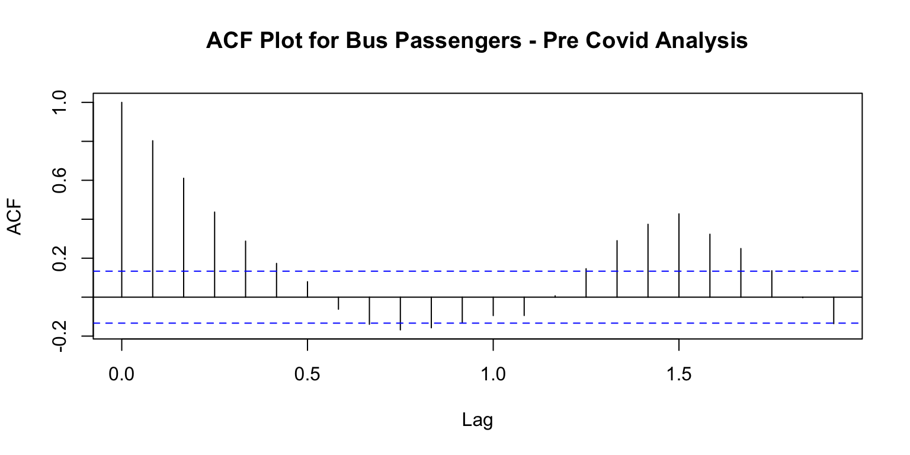
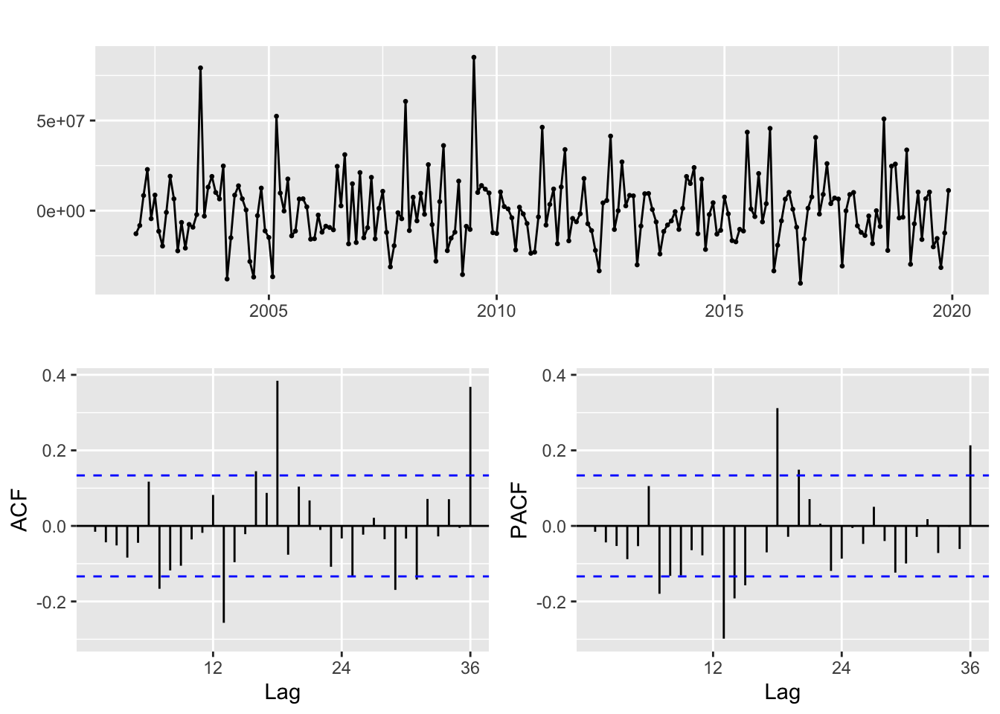
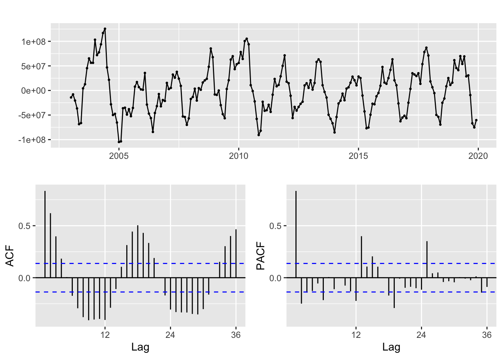
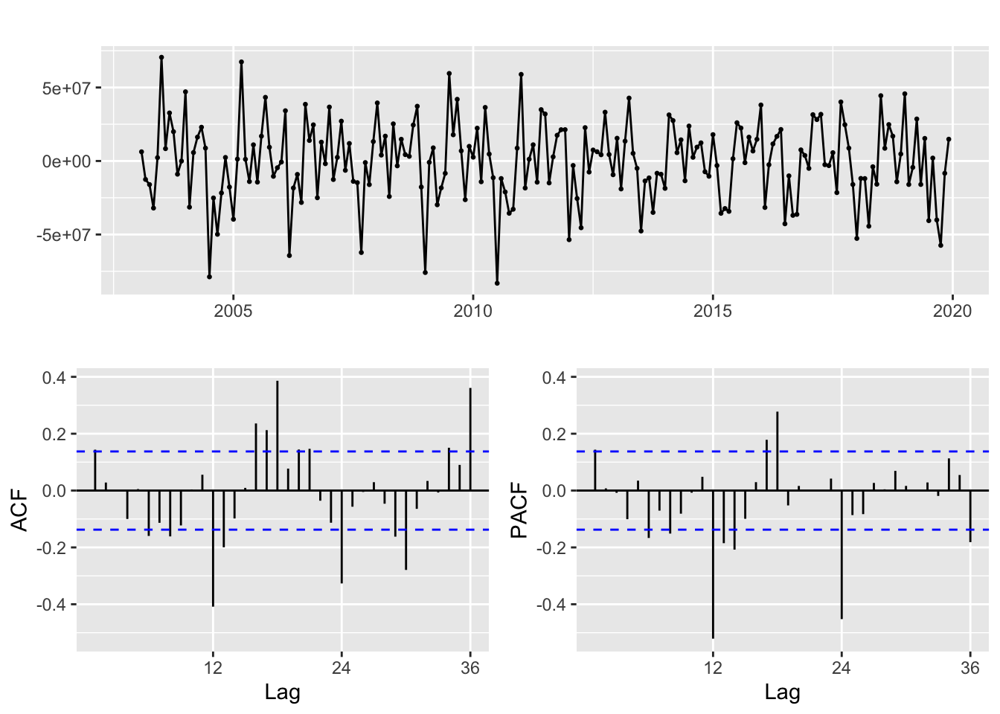
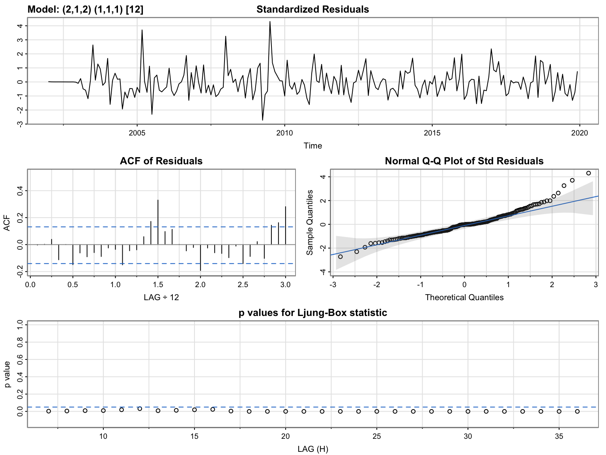
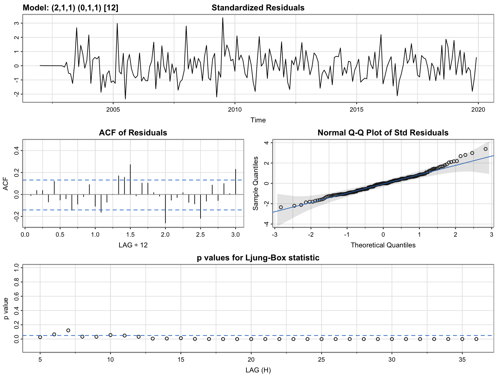
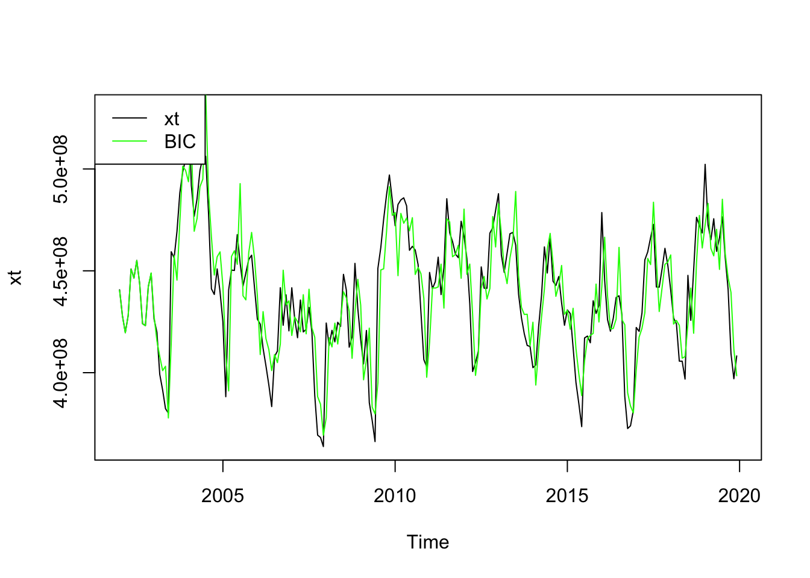
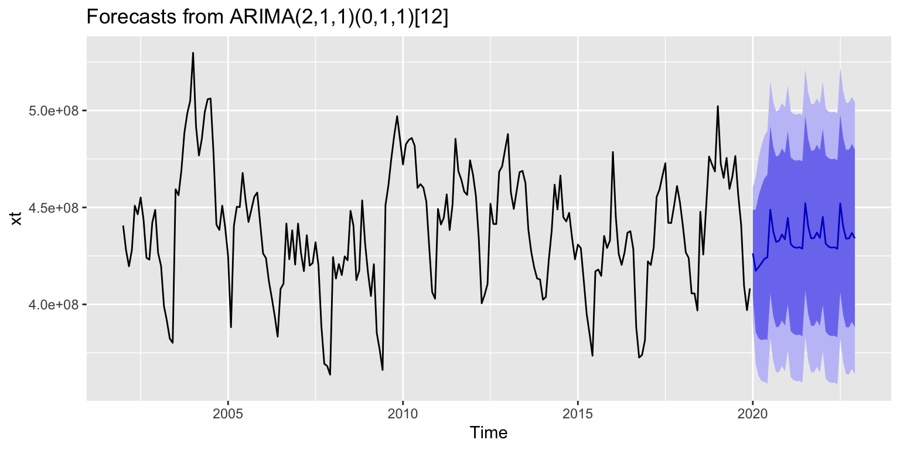

Bus Passengers
Introduction…
As we saw in the previous section 5_7_bus_passengers.html we can see that the data is seasonal.
Plot ACF
# Import dataset
ts_bus_passengers <- read_csv('../data/ts_bus_passengers_PC.csv')
# Create time series
ts_bus_passengers <- ts(ts_bus_passengers$x,star=decimal_date(as.Date("2002-01-01",format = "%Y-%m-%d")),frequency = 12)
# Resize plots
options(repr.plot.width = 5, repr.plot.height = 2)
# ACF Plot
acf(ts_bus_passengers, lags = 60, main="ACF Plot for Bus Passengers - Pre Covid Analysis")
…
Augmented Dickey-Fuller Test Code
# Augmented Dickey-Fuller Test calculation
test_bus_passengers <- adf.test(ts_bus_passengers)
# Print results
print(test_bus_passengers)
Augmented Dickey-Fuller Test
data: ts_bus_passengers
Dickey-Fuller = -4.7074, Lag order = 5, p-value = 0.01
alternative hypothesis: stationaryDefine if its stationary. Compare ACF to Augmented Dickey Fuller Test
Differencing Code
options(repr.plot.width = 6, repr.plot.height = 6)
# Differenced Plot
ts_bus_passengers %>% diff() %>% ggtsdisplay()
Seasonal Differencing Code
options(repr.plot.width = 6, repr.plot.height = 6)
# Seasonal Differenced Plot
ts_bus_passengers %>% diff(lag=12) %>% ggtsdisplay()
Ordinary and Seasonal Differencing Code
options(repr.plot.width = 6, repr.plot.height = 6)
# Ordinary and Seasonal Differenced Plot
ts_bus_passengers %>% diff(lag=12) %>% diff() %>% ggtsdisplay() # do both
Based on the values obtained before, we assess the best p,d,q,P,D,Q,S below
Model Parameter Assesing
xt <- ts_bus_passengers
s <- 12
#write a funtion
SARIMA.c = function(p1,p2,q1,q2,P1,P2,Q1,Q2,data){
temp <- c()
d <- 1
D <- 1
s <- 12
n <- 40
i <- 1
temp <- data.frame()
ls <- matrix(rep(NA,9*n),nrow=n)
for (p in p1:p2)
{
for(q in q1:q2)
{
for(P in P1:P2)
{
for(Q in Q1:Q2)
{
if(p+d+q+P+D+Q<=12)
{
model<- Arima(data,order=c(p-1,d,q-1),seasonal = c(P-1,D,Q-1))
ls[i,] <- c(p-1,d,q-1,P-1,D,Q-1,model$aic,model$bic, model$aicc)
i <- i+1
#print(i)
}
}
}
}
}
temp <- as.data.frame(ls)
names(temp) <- c("p","d","q","P","D","Q","AIC","BIC","AICc")
temp <- na.omit(temp)
temp
#knitr::kable(temp)
}
temp <- SARIMA.c(p1=1,p2=3,q1=1,q2=3,P1=1,P2=2,Q1=1,Q2=2,data = xt)
knitr::kable(temp)| p | d | q | P | D | Q | AIC | BIC | AICc |
|---|---|---|---|---|---|---|---|---|
| 0 | 1 | 0 | 0 | 1 | 0 | 7518.685 | 7521.998 | 7518.705 |
| 0 | 1 | 0 | 0 | 1 | 1 | 7388.083 | 7394.709 | 7388.143 |
| 0 | 1 | 0 | 1 | 1 | 0 | 7479.523 | 7486.149 | 7479.583 |
| 0 | 1 | 0 | 1 | 1 | 1 | 7386.390 | 7396.330 | 7386.511 |
| 0 | 1 | 1 | 0 | 1 | 0 | 7516.582 | 7523.208 | 7516.642 |
| 0 | 1 | 1 | 0 | 1 | 1 | 7388.301 | 7398.240 | 7388.421 |
| 0 | 1 | 1 | 1 | 1 | 0 | 7478.064 | 7488.004 | 7478.185 |
| 0 | 1 | 1 | 1 | 1 | 1 | 7387.111 | 7400.364 | 7387.313 |
| 0 | 1 | 2 | 0 | 1 | 0 | 7518.439 | 7528.379 | 7518.560 |
| 0 | 1 | 2 | 0 | 1 | 1 | 7390.040 | 7403.293 | 7390.242 |
| 0 | 1 | 2 | 1 | 1 | 0 | 7480.062 | 7493.315 | 7480.264 |
| 0 | 1 | 2 | 1 | 1 | 1 | 7388.453 | 7405.019 | 7388.758 |
| 1 | 1 | 0 | 0 | 1 | 0 | 7516.446 | 7523.072 | 7516.506 |
| 1 | 1 | 0 | 0 | 1 | 1 | 7388.435 | 7398.375 | 7388.556 |
| 1 | 1 | 0 | 1 | 1 | 0 | 7478.132 | 7488.072 | 7478.253 |
| 1 | 1 | 0 | 1 | 1 | 1 | 7387.253 | 7400.506 | 7387.455 |
| 1 | 1 | 1 | 0 | 1 | 0 | 7518.438 | 7528.378 | 7518.559 |
| 1 | 1 | 1 | 0 | 1 | 1 | 7387.716 | 7400.969 | 7387.918 |
| 1 | 1 | 1 | 1 | 1 | 0 | 7480.064 | 7493.317 | 7480.266 |
| 1 | 1 | 1 | 1 | 1 | 1 | 7386.803 | 7403.370 | 7387.108 |
| 1 | 1 | 2 | 0 | 1 | 0 | 7520.426 | 7533.679 | 7520.628 |
| 1 | 1 | 2 | 0 | 1 | 1 | 7378.220 | 7394.786 | 7378.525 |
| 1 | 1 | 2 | 1 | 1 | 0 | 7482.061 | 7498.627 | 7482.365 |
| 1 | 1 | 2 | 1 | 1 | 1 | 7388.802 | 7408.681 | 7389.231 |
| 2 | 1 | 0 | 0 | 1 | 0 | 7518.434 | 7528.374 | 7518.555 |
| 2 | 1 | 0 | 0 | 1 | 1 | 7390.017 | 7403.270 | 7390.219 |
| 2 | 1 | 0 | 1 | 1 | 0 | 7480.011 | 7493.264 | 7480.213 |
| 2 | 1 | 0 | 1 | 1 | 1 | 7388.445 | 7405.011 | 7388.750 |
| 2 | 1 | 1 | 0 | 1 | 0 | 7499.119 | 7512.372 | 7499.321 |
| 2 | 1 | 1 | 0 | 1 | 1 | 7377.401 | 7393.967 | 7377.706 |
| 2 | 1 | 1 | 1 | 1 | 0 | 7462.554 | 7479.120 | 7462.859 |
| 2 | 1 | 1 | 1 | 1 | 1 | 7377.137 | 7397.016 | 7377.565 |
| 2 | 1 | 2 | 0 | 1 | 0 | 7506.585 | 7523.151 | 7506.890 |
| 2 | 1 | 2 | 0 | 1 | 1 | 7380.031 | 7399.911 | 7380.460 |
| 2 | 1 | 2 | 1 | 1 | 0 | 7460.971 | 7480.850 | 7461.400 |
| 2 | 1 | 2 | 1 | 1 | 1 | 7373.714 | 7396.907 | 7374.289 |
Model Selection
Model Selection
# Check best model with AIC
temp[which.min(temp$AIC),] p d q P D Q AIC BIC AICc
36 2 1 2 1 1 1 7373.714 7396.907 7374.289Model Selection
# Check best model with BIC
temp[which.min(temp$BIC),] p d q P D Q AIC BIC AICc
30 2 1 1 0 1 1 7377.401 7393.967 7377.706Model Selection
# Check best model with AICc
temp[which.min(temp$AICc),] p d q P D Q AIC BIC AICc
36 2 1 2 1 1 1 7373.714 7396.907 7374.289Model Diagnostics
Model Diagnostics - parameters with best AIC
AIC <- temp[which.min(temp$AIC),]
p1 <- AIC$p
d1 <- AIC$d
q1 <- AIC$q
P1 <- AIC$P
D1 <- AIC$D
Q1 <- AIC$Q
# Model diagnostics for best AIC
model_output <- capture.output(sarima(xt, p1, d1, q1, P1, D1, Q1, s))
Model Diagnostics - parameters with best BIC
BIC <- temp[which.min(temp$BIC),]
p2 <- BIC$p
d2 <- BIC$d
q2 <- BIC$q
P2 <- BIC$P
D2 <- BIC$D
Q2 <- BIC$Q
# Model diagnostics for best BIC
model_output <- capture.output(sarima(xt, p2, d2, q2, P2, D2, Q2, s))
Describe model diagnostics
Fit ARIMA model using Arima()
Model Fitting
best_model <- temp[which.min(temp$BIC),]
p <- best_model$p
d <- best_model$d
q <- best_model$q
P <- best_model$P
D <- best_model$D
Q <- best_model$Q
model <- Arima(xt, order=c(p, d, q), seasonal=c(P,D,Q))
plot(xt, col="black")
lines(fitted(model), col="green")
legend(x = "topleft", legend = c("xt", "BIC"), col = c("black", "green"), lty = 1)
Compare fitted vs Actual plots
Fitted Model Summary
fit <- Arima(xt, order=c(p, d, q), seasonal=c(P,D,Q))
summary(fit)Series: xt
ARIMA(2,1,1)(0,1,1)[12]
Coefficients:
ar1 ar2 ma1 sma1
0.9986 -0.1787 -1.0000 -1.0000
s.e. 0.0688 0.0694 0.0261 0.0684
sigma^2 = 2.816e+14: log likelihood = -3683.7
AIC=7377.4 AICc=7377.71 BIC=7393.97
Training set error measures:
ME RMSE MAE MPE MAPE MASE
Training set -27834.36 16106236 12421815 -0.1179356 2.840362 0.3278938
ACF1
Training set -0.01018491Model Equation with Latex
\[\begin{align} x_t &= \Phi x_{t-1} + w_t + \Theta w_{t-1} \\ <!-- x_t &= 0.1832 x_{t-1} - 0.6324 x_{t-2} + w_t - 0.4982 w_{t-1} --> \end{align}\]
auto.arima()
auto.arima(xt)Series: xt
ARIMA(0,0,0)(0,0,2)[12] with non-zero mean
Coefficients:
sma1 sma2 mean
0.0335 -0.3865 438440409
s.e. 0.0683 0.0663 1375737
sigma^2 = 8.694e+14: log likelihood = -4022.02
AIC=8052.03 AICc=8052.22 BIC=8065.54Compare selected model to auto.arima()
Forecast
forecast_fit <- forecast(fit,36)
forecast_fit Point Forecast Lo 80 Hi 80 Lo 95 Hi 95
Jan 2020 426344661 404069171 448620152 392277239 460412084
Feb 2020 417370506 385709581 449031431 368949300 465791712
Mar 2020 419250581 382438233 456062929 362950953 475550208
Apr 2020 421290412 381532316 461048508 360485652 482095172
May 2020 423522030 382014878 465029181 360042320 487001740
Jun 2020 424236540 381656074 466817006 359115337 489357743
Jul 2020 448809236 405549739 492068734 382649544 514968928
Aug 2020 437675240 393972586 481377894 370837798 504512681
Sep 2020 432194158 388192099 476196217 364898816 499489500
Oct 2020 432835970 388623344 477048597 365218593 500453348
Nov 2020 436038895 391671400 480406389 368184667 503893122
Dec 2020 433573304 389087027 478059582 365537414 501609195
Jan 2021 444640379 399963176 489317582 376312493 512968264
Feb 2021 431067157 386255149 475879164 362533105 499601208
Mar 2021 429614688 384701289 474528087 360925572 498303804
Apr 2021 429148548 384159451 474137645 360343662 497953435
May 2021 429473270 384426088 474520452 360579550 498366989
Jun 2021 428731400 383637597 473825203 359766380 497696420
Jul 2021 452190540 407057081 497323999 383164870 521216210
Aug 2021 440204819 395035304 485374334 371124007 509285631
Sep 2021 434072212 388867668 479276756 364937827 503206596
Oct 2021 434215623 388975150 479456095 365026291 503404955
Nov 2021 437037280 391758844 482315716 367789888 506284672
Dec 2021 434280026 388961796 479598256 364971774 503588278
Jan 2022 445123982 399695961 490552004 375647819 514600145
Feb 2022 431380078 385879002 476881154 361792188 500967969
Mar 2022 429797040 384236735 475357345 360118567 499475513
Apr 2022 429231017 383623735 474838300 359480697 498981337
May 2022 429479329 383833642 475125017 359670274 499288384
Jun 2022 428679008 383000203 474357812 358819305 498538710
Jul 2022 452093433 406384129 497802736 382187086 521999780
Aug 2022 440073506 394334118 485812894 370121148 510025863
Sep 2022 433914731 388143821 479685641 363914164 503915298
Oct 2022 434038124 388232758 479843491 363984862 504091387
Nov 2022 436844468 391000827 482688110 366732669 506956267
Dec 2022 434075500 388190234 479960767 363900041 504250960Forecast Plot
# Path to save plot
file_path <- "../images/6_bus_passengers.png"
# Plot
plot <- autoplot(forecast_fit)
# Use ggsave to save the plot as a PNG image
ggsave(plot, filename = file_path, width = 10, height = 5)
# Show plot
plot
Conclusion